Selected Publications
Electronic versions of these research articles are being provided for personal use only. Their public distribution is subject to copyright law and prior consent must be obtained from the respective journal(s) and/or author(s) for the purpose of further dissemination by any third party.
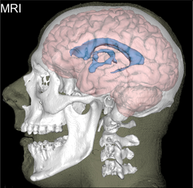
A Irimia, AS Maher, KA Rostowsky, NF Chowdhury, DH Hwang, EM Law (2019)
A Irimia, AS Maher, KA Rostowsky, NF Chowdhury, DH Hwang, EM Law (2019)
Brain segmentation from computed tomography of healthy aging and geriatric concussion at variable spatial resolutions Frontiers in Neuroinformatics, volume 13, article 9 [PDF]
Although MRI is more suitable for distinguishing gray matter (GM) from white matter (WM) than computed tomography (CT), the growing clinical use of the latter technique has renewed interest in head CT segmentation. But whereas MRI segmentation is a sophisticated and technically-mature research field, the task of automatically classifying soft brain tissues from CT remains largely unexplored. Brain segmentation methods for MRI hold considerable potential for adaptation and application to CT image processing. Here we demonstrate this by combining probabilistic, atlas-based classification with topologically-constrained tissue boundary refinement to delineate WM, GM and cerebrospinal fluid from head CT images.
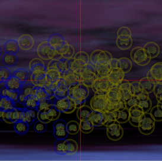
A Irimia, X Lei, CM Torgerson, ZJ Jacokes, S Abe and JD Van Horn (2018)
A Irimia, X Lei, CM Torgerson, ZJ Jacokes, S Abe and JD Van Horn (2018)
Support vector machines, multidimensional scaling and magnetic resonance imaging reveal structural brain abnormalities associated with the interaction between autism spectrum disorder and sex Frontiers in Neurology volume 12, article 93 [PDF]
It remains difficult to identify reliable neuroanatomic biomarkers of autism spectrum disorder (ASD) based on MRI and diffusion tensor imaging. Here we assess the suitability of support vector machines (SVMs, a robust type of machine learning) as an alternative to standard statistical inference for identifying structural brain features which can reliably distinguish ASD patients from typically developing subjects of either sex, enabling study of the interaction between ASD diagnosis and sex. We find that SVMs can perform these tasks with high accuracy and that the neuroanatomic correlates of ASD identified using SVMs overlap substantially with those found using conventional statistical methods. Our results confirm and establish SVMs as powerful machine learning tools for the study of ASD-related structural brain abnormalities. Additionally, they provide novel insights into the volumetric, morphometric, and connectomic correlates of this epidemiologically significant disorder.
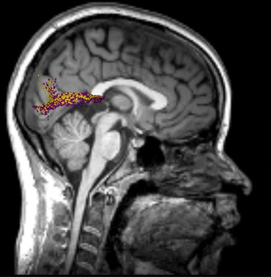
AS Maher, KA Rostowsky, NF Chowdhury and A Irimia (2018)
AS Maher, KA Rostowsky, NF Chowdhury and A Irimia (2018)
Neuroinformatics and analysis of connectomic alterations due to cerebral microhemorrhages in geriatric mild neurotrauma ACM Bioinformatics and Computational Biology volume 9, pages 165-171 [PDF]
Quantifying CMB-related connectome changes in mild TBI (mTBI) patients requires ingenious neuroinformatics to integrate structural magnetic resonance imaging (sMRI) with diffusion-weighted imaging (DWI) for patient-tailored profiling while preserving the data scientist’s ability to implement population studies. Such solutions, however, can assist the refinement of rehabilitation protocols and streamline large-scale analysis while accommodating the heterogeneity of mTBI. This study describes a pipeline for the multimodal integration of sMRI/DWI/DTI to quantify white matter (WM) neural network circuitry alterations associated with mTBI-related CMBs. The approach incorporates WM streamline matching, topology-compliant streamline prototyping and along-tract analysis within a unified framework.
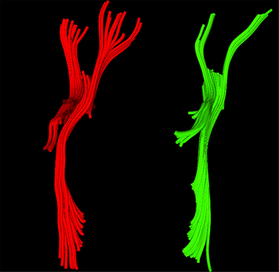
KA Rostowsky, AS Maher, A Irimia (2018)
KA Rostowsky, AS Maher, A Irimia (2018)
Macroscale white matter alterations due to traumatic cerebral microhemorrhages are revealed by diffusion tensor imaging Frontiers in Neurology volume 9, article 948 [PDF]
The clinical significance of post-traumatic cerebral microbleeds (CMBs) remains controversial partly because it is unclear whether mild traumatic brain injury (mTBI) related CMBs entail brain circuitry disruptions which are functionally significant. This study combines magnetic resonance and diffusion tensor imaging to map white matter circuitry differences in older mTBI victims with acute CMBs of traumatic etiology. The results suggest that CMBs can be associated with lasting changes in perilesional WM properties, even relatively far from CMB locations. Future strategies for mTBI care will likely rely on the ability to assess how subtle circuitry changes impact neural/cognitive function. Thus, assessing CMB effects upon the structural connectome can play a useful role when studying CMB sequelae and their potential impact upon the clinical outcome of individuals with concussion.
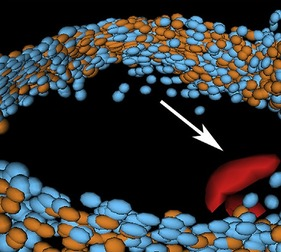
A Irimia, JD Van Horn and PM Vespa (2018)
A Irimia, JD Van Horn and PM Vespa (2018)
Cerebral microhemorrhages due to traumatic brain injury and their effects on the aging human brain Neurobiology of Aging volume 66, pages 158-164 [PDF]
Although cerebral microbleeds (CMBs) are frequently associated with traumatic brain injury (TBI), their effects on clinical outcome after TBI remain controversial and poorly understood, particularly in older adults. Here we (1) highlight major challenges and opportunities associated with studying the effects of TBI-mediated CMBs; (2) review the evidence on their potential effects on cognitive and neural outcome as a function of age at injury; and (3) suggest priorities for future research on understanding the clinical implications of CMBs. Although TBI-mediated CMBs are likely distinct from those due to cerebral amyloid angiopathy or other neurodegenerative diseases, the effects of these two CMB types on brain function may share common features. Furthermore, in older TBI victims, the incidence of TBI-mediated CMBs may approximate that of cerebral amyloid angiopathy-related CMBs, and thus warrants detailed study.
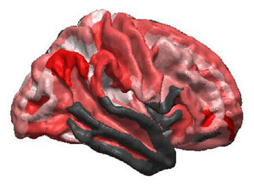
A Irimia, SYM Goh, AC Wade, K Patel, PM Vespa and JD Van Horn (2017)
A Irimia, SYM Goh, AC Wade, K Patel, PM Vespa and JD Van Horn (2017)
Traumatic brain injury severity, neuropathophysiology, and clinical outcome: insights from multimodal neuroimaging Frontiers in Neurology volume 8, article 530 [PDF]
The relationship between the acute clinical presentation of patients with traumatic brain injury (TBI), long-term changes in brain structure prompted by injury and chronic functional outcome is insufficiently understood. In this preliminary study, we investigate how acute Glasgow coma score (GCS) and epileptic seizure occurrence after TBIs are statistically related to functional outcome (as quantified using the Glasgow Outcome Score) and to the extent of cortical thinning observed 6 months after the traumatic event.
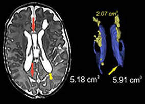
M Hinojosa-Rodriguez, T Harmony, C Carillo-Prado, JD Van Horn, A Irimia, CM Torgerson and ZJ Jacokes (2017)
M Hinojosa-Rodriguez, T Harmony, C Carillo-Prado, JD Van Horn, A Irimia, CM Torgerson and ZJ Jacokes (2017)
Clinical neuroimaging of the preterm infant: diagnosis and prognosis NeuroImage Clinical volume 16, pages 355-368 [PDF]
Brain research studies using magnetic resonance imaging (MRI) report that 50% to 80% of extremely and very preterm neonates have diffuse white matter abnormalities (WMA) which correspond to only the minimum grade of severity. Nevertheless, mild-to-moderate diffuse WMA has also been associated with significant affectations of motor and cognitive activities. Here we explore most frequently observed neuropathological patterns using recent neuroimaging findings in preterm newborns and infants with perinatal brain injury. Specifically, we focus on the use of neuroimaging to aid diagnosis, measure morphometric brain damage, and to track long-term clinical neurological outcomes.
A Irimia, S Wei, N Lu, CM Moore and DN Kennedy (2017)
Mobile monitoring of traumatic brain injury in older adults: challenges and opportunities Neuroinformatics volume 15, pages 227-230 [PDF]
Mobile sensors have emerged as a promising strategy for encouraging healthy behaviors, assisting self-management of chronic disease, reducing health problems, decreasing the number of healthcare visits and facilitating beneficial interventions to improve well-being. This article proposes the use of mobile devices to monitor TBI patients to improve TBI morbidity rates, decrease health care costs and guide clinical decisions on treatment type and aggressiveness.
JD van Horn, A Irimia, CM Torgerson, A Bhattrai, Z Jacokes and PM Vespa (2018)
Mild cognitive impairment and structural brain abnormalities in a sexagenarian with a history of childhood traumatic brain injury Journal of Neuroscience Research vol. 9, pages 652-660 [PDF]
We present a case study involving an older, female patient with a history of pediatric traumatic brain injury (TBI). MRI/DTI volumes were acquired from the volunteer in question, her brain volumetrics and morphometrics were extracted, and these were then systematically compared against corresponding metrics obtained from a large sample of older healthy control (HC) subjects as well as from subjects in various stages of mild cognitive impairment (MCI) and Alzheimer disease (AD). Our analyses find the patient’s brain morphometry and connectivity most similar to those of patients classified as having early-onset MCI, in contrast to HC, late MCI, and AD samples. Our examination will be of particular interest to those interested in assessing the clinical course in patients having suffered TBI earlier in life.
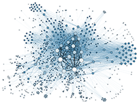
JD van Horn, A Bhattrai, A Irimia (2017)
JD van Horn, A Bhattrai, A Irimia (2017)
Multimodal imaging of neurometabolic pathology due to traumatic brain injury Trends in Neurosciences, volume 40, pp. 39-59 [PDF]
The impact of traumatic brain injury (TBI) involves neuronal integrity losses, neurotransmitter imbalance and metabolite dysregulation, leading to the release of pro- or anti-apoptotic factors which mediate cell survival or death. Such dynamic processes affecting the brain's neurochemistry can be monitored using a variety of neuroimaging techniques, whose combined use can be particularly useful for understanding patient-specific clinical trajectories. Here, we describe how TBI changes the metabolism of essential neurochemical compounds, summarize how neuroimaging approaches facilitate the study of such alterations, and highlight promising ways in which neuroimaging can be used to investigate post-TBI changes in neurometabolism.

EM Palacios, AJ Martin, MA Boss, F Ezekiel, YS Chang, EL Yuh, MJ Vassar, DM Schnyer, CL MacDonald, KL Crawford, A Irimia, AW Toga, P Mukherjee and the TRACK-TBI Investigators (2017)
Toward precision and reproducibility of diffusion tensor imaging: a multicenter phantom and traveling volunteer study American Journal of Neuroradiology volume 38, pages 537-545 [PDF]
Precision medicine is an approach to disease diagnosis, treatment, and prevention that relies on biomarkers that minimize the variability of individual patient measurements. The aim of this study was to assess the intersite variability after harmonization of a high-angular-resolution 3T diffusion tensor imaging protocol across 13 scanners at the 11 academic medical centers participating in the TRACK-TBI multisite study. Diffusion MR imaging was acquired from a novel isotropic diffusion phantom developed at NIST and from the brain of a traveling volunteer on thirteen 3T MR imaging scanners representing 3 major vendors (GE, Philips, Siemens). Results suggest the feasibility of standardizing DTI across scanners from different vendors in a large-scale neuroimaging study.
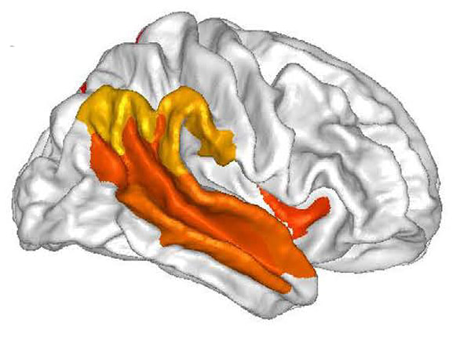
A Irimia, CM Torgerson, ZJ Jacokes, JD Van Horn (2017)
Here we use magnetic resonance imaging (MRI) and diffusion weighted imaging (DWI) to identify the brain structure correlates of the sex-by-ASD diagnosis interaction, which is found to be predicated primarily upon white matter connectivity density innervating, bilaterally, the lateral aspect of the temporal lobe, the temporo-parieto-occipital junction and the medial parietal lobe. Our findings add considerable weight to three long-standing hypotheses according to which the sex disparity of ASD incidence is (A) due to WM connectivity rather than to GM differences, (B) modulated to a large extent by temporoparietal connectivity, and (C) accompanied by brain function differences driven by these effects.
A Irimia, CM Torgerson, ZJ Jacokes, JD Van Horn (2017)
The connectomes of males and females with autism spectrum disorder have significantly different white matter connectivity densities Scientific Reporrts volume 7, article no. 46401 [PDF]
Here we use magnetic resonance imaging (MRI) and diffusion weighted imaging (DWI) to identify the brain structure correlates of the sex-by-ASD diagnosis interaction, which is found to be predicated primarily upon white matter connectivity density innervating, bilaterally, the lateral aspect of the temporal lobe, the temporo-parieto-occipital junction and the medial parietal lobe. Our findings add considerable weight to three long-standing hypotheses according to which the sex disparity of ASD incidence is (A) due to WM connectivity rather than to GM differences, (B) modulated to a large extent by temporoparietal connectivity, and (C) accompanied by brain function differences driven by these effects.
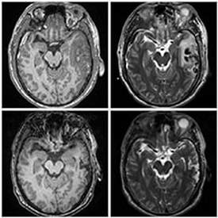
B Wang, MW Prastawa, A Irimia, A Saha, W Liu, SYM Goh, PM Vespa, JD van Horn, G Gerig (2016)
With the increasing use of efficient multimodal 3D imaging, clinicians are able to access longitudinal imaging to stage pathological diseases, to monitor the efficacy of therapeutic interventions, or to assess and quantify rehabilitation efforts. Analysis of such four-dimensional (4D) image data presenting pathologies, including disappearing and newly appearing lesions, represents a significant challenge due to the presence of complex spatio-temporal changes. Image analysis methods for such 4D image data have to include not only a concept for joint segmentation of 3D datasets to account for inherent correlations of subject-specific repeated scans but also a mechanism to account for large deformations and the destruction and formation of lesions (e.g., edema, bleeding) due to underlying physiological processes associated with damage, intervention, and recovery. In this paper, we propose a novel framework that provides a joint segmentation-registration framework to tackle the inherent problem of image registration in the presence of objects not present in all images of the time series.
B Wang, MW Prastawa, A Irimia, A Saha, W Liu, SYM Goh, PM Vespa, JD van Horn, G Gerig (2016)
Modeling four-dimensional pathological changes by leveraging normative models Computer Vision and Image Understanding, volume 151, pages 3-13 [PDF]
With the increasing use of efficient multimodal 3D imaging, clinicians are able to access longitudinal imaging to stage pathological diseases, to monitor the efficacy of therapeutic interventions, or to assess and quantify rehabilitation efforts. Analysis of such four-dimensional (4D) image data presenting pathologies, including disappearing and newly appearing lesions, represents a significant challenge due to the presence of complex spatio-temporal changes. Image analysis methods for such 4D image data have to include not only a concept for joint segmentation of 3D datasets to account for inherent correlations of subject-specific repeated scans but also a mechanism to account for large deformations and the destruction and formation of lesions (e.g., edema, bleeding) due to underlying physiological processes associated with damage, intervention, and recovery. In this paper, we propose a novel framework that provides a joint segmentation-registration framework to tackle the inherent problem of image registration in the presence of objects not present in all images of the time series.
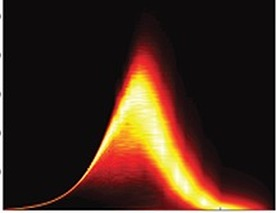
A Irimia, JD van Horn (2016)
Studying brain connectivity is important due to potential differences in brain circuitry between health and disease. One drawback of graph-theoretic approaches to this is that their results are dependent on the spatial scale at which brain circuitry is examined and explicitly on how vertices and edges are defined in network models. This study explores network model behavior as a function of nodal number and connectivity weighing. Results suggest that network model properties vary appreciably as a function of vertex assignment convention and edge weighing scheme and that graph-theoretic analysis results should not be compared across spatial scales without appropriate understanding of how spatial scale and model topology modulate network model properties.
A Irimia, JD van Horn (2016)
Scale-dependent variability and quantitative regimes in graph-theoretic representations of human cortical networks Brain Connectivity, volume 6, pages 152-163 [PDF]
Studying brain connectivity is important due to potential differences in brain circuitry between health and disease. One drawback of graph-theoretic approaches to this is that their results are dependent on the spatial scale at which brain circuitry is examined and explicitly on how vertices and edges are defined in network models. This study explores network model behavior as a function of nodal number and connectivity weighing. Results suggest that network model properties vary appreciably as a function of vertex assignment convention and edge weighing scheme and that graph-theoretic analysis results should not be compared across spatial scales without appropriate understanding of how spatial scale and model topology modulate network model properties.
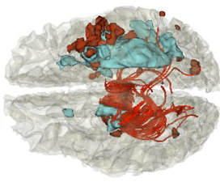
SYM Goh, A Irimia, PM Vespa, JD Van Horn (2016)
In traumatic brain injury (TBI) and intracerebral hemorrhage (ICH), the heterogeneity of lesion sizes and types necessitates a variety of imaging modalities to acquire a comprehensive perspective on injury extent. Although it is advantageous to combine imaging modalities and to leverage their complementary benefits, there are difficulties in integrating information across imaging types. Thus, it is important that efforts be dedicated to the creation and sustained refinement of resources for multimodal data integration. Here, we propose a novel approach to the integration of neuroimaging data acquired from human patients with TBI/ICH using various modalities; we also demonstrate the integrated use of multimodal magnetic resonance imaging (MRI) and diffusion tensor imaging (DTI) data for TBI analysis based on both visual observations and quantitative metrics.
SYM Goh, A Irimia, PM Vespa, JD Van Horn (2016)
Patient-tailored multimodal neuroimaging, visualization and quantification of human intra-cerebral hemorrhage Proceedings of the SPIE, volume 9789, article 3 [PDF]
In traumatic brain injury (TBI) and intracerebral hemorrhage (ICH), the heterogeneity of lesion sizes and types necessitates a variety of imaging modalities to acquire a comprehensive perspective on injury extent. Although it is advantageous to combine imaging modalities and to leverage their complementary benefits, there are difficulties in integrating information across imaging types. Thus, it is important that efforts be dedicated to the creation and sustained refinement of resources for multimodal data integration. Here, we propose a novel approach to the integration of neuroimaging data acquired from human patients with TBI/ICH using various modalities; we also demonstrate the integrated use of multimodal magnetic resonance imaging (MRI) and diffusion tensor imaging (DTI) data for TBI analysis based on both visual observations and quantitative metrics.
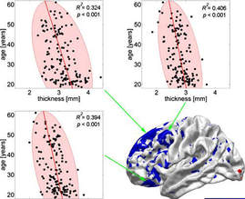
A Irimia, CM Torgerson, SYM Goh, JD van Horn (2015)
Mapping aging-related brain structure and connectivity changes can be helpful for assessing physiological brain age (PBA), which is distinct from chronological age (CA) because genetic and environmental factors affect individuals differently. This study proposes an approach whereby structural and connectomic information can be combined to estimate PBA as an early biomarker of brain aging. In a cohort of 136 healthy adults, magnetic resonance and diffusion tensor imaging are respectively used to measure cortical thickness over the entire cortical mantle as well as connectivity properties (mean connectivity density and mean fractional anisotropy) for white matter connections.
A Irimia, CM Torgerson, SYM Goh, JD van Horn (2015)
Statistical estimation of physiological brain age as a descriptor of senescence rate during adulthood Brain Imaging and Behavior volume 9, pages 678-689 [PDF]
Mapping aging-related brain structure and connectivity changes can be helpful for assessing physiological brain age (PBA), which is distinct from chronological age (CA) because genetic and environmental factors affect individuals differently. This study proposes an approach whereby structural and connectomic information can be combined to estimate PBA as an early biomarker of brain aging. In a cohort of 136 healthy adults, magnetic resonance and diffusion tensor imaging are respectively used to measure cortical thickness over the entire cortical mantle as well as connectivity properties (mean connectivity density and mean fractional anisotropy) for white matter connections.
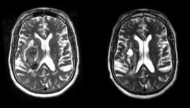
Andrei Irimia and John D. Van Horn (2015)
Functional deficits due to TBI can have significant and enduring consequences upon patients’ life quality and expectancy. Although fMRI is essential for understanding TBI pathophysiology, an insufficient amount of effort has been dedicated to the task of translating fMRI findings into information with clinical utility. Here we summarize the use of functional neuroimaging techniques for advancing current knowledge of TBI-related brain dysfunction.
Andrei Irimia and John D. Van Horn (2015)
Functional neuroimaging of traumatic brain injury: advances and clinical utility Neuropsychiatric Disease and Treatment volume 11, pages 2355-2365 [PDF]
Functional deficits due to TBI can have significant and enduring consequences upon patients’ life quality and expectancy. Although fMRI is essential for understanding TBI pathophysiology, an insufficient amount of effort has been dedicated to the task of translating fMRI findings into information with clinical utility. Here we summarize the use of functional neuroimaging techniques for advancing current knowledge of TBI-related brain dysfunction.
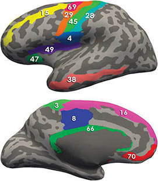
JS Labus, JD Van Horn, A Gupta, M Alaverdyan, CM Torgerson, C Ashe-McNalley, A Irimia, JY Hong, B Naliboff, K Tillisch and EA Mayer (2015)
Irritable bowel syndrome (IBS) is the most common chronic visceral pain disorder. The pathophysiology of IBS is incompletely understood; however, evidence strongly suggests dysregulation of the brain–gut axis. The aim of this study was to apply multivariate pattern analysis to identify an IBS-related morphometric brain signature that could serve as a central biological marker and provide new mechanistic insights into the pathophysiology of IBS. Parcellation of 165 cortical and subcortical regions was performed using FreeSurfer and the Destrieux and Harvard-Oxford atlases. Volume, mean curvature, surface area, and cortical thickness were calculated for each region. Sparse partial least squares discriminant analysis was applied to develop a diagnostic model using a training set of 160 females (80 healthy controls and 80 patients with IBS). The findings demonstrate that the predictive accuracy of a classification algorithm based solely on regional brain morphometry is not sufficient, but they do provide support for the utility of multivariate pattern analysis for identifying meaningful neurobiological markers in IBS.
JS Labus, JD Van Horn, A Gupta, M Alaverdyan, CM Torgerson, C Ashe-McNalley, A Irimia, JY Hong, B Naliboff, K Tillisch and EA Mayer (2015)
Multivariate morphological brain signatures predict patients with chronic abdominal pain from healthy control subjects Pain volume 156, pages 1545-1554 [PDF]
Irritable bowel syndrome (IBS) is the most common chronic visceral pain disorder. The pathophysiology of IBS is incompletely understood; however, evidence strongly suggests dysregulation of the brain–gut axis. The aim of this study was to apply multivariate pattern analysis to identify an IBS-related morphometric brain signature that could serve as a central biological marker and provide new mechanistic insights into the pathophysiology of IBS. Parcellation of 165 cortical and subcortical regions was performed using FreeSurfer and the Destrieux and Harvard-Oxford atlases. Volume, mean curvature, surface area, and cortical thickness were calculated for each region. Sparse partial least squares discriminant analysis was applied to develop a diagnostic model using a training set of 160 females (80 healthy controls and 80 patients with IBS). The findings demonstrate that the predictive accuracy of a classification algorithm based solely on regional brain morphometry is not sufficient, but they do provide support for the utility of multivariate pattern analysis for identifying meaningful neurobiological markers in IBS.
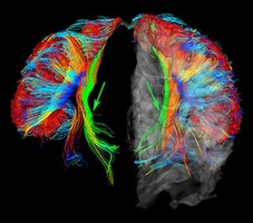
A Irimia, JS Labus, CM Torgerson, JD Van Horn and EA Mayer (2015)
Studies have demonstrated the existence of regional gray matter and white matter (WM) alterations in the brains of patients with irritable bowel syndrome (IBS), but the extent to which altered anatomical connectivity between brain regions is altered in IBS remains incompletely understood. In this study, magnetic resonance imaging (MRI) and diffusion tensor imaging (DTI) were used to identify significant brain connectivity differences between IBS patients and healthy control (HC) subjects. HC and IBS subjects were found to differ significantly within both left and right viscerotopic portions of the primary somatosensory cortex (S1), with the mean FA of WM bundles innervating S1 being the predictor variable responsible for these differences. These findings illustrate how a chronic visceral pain syndrome and brain structure are related in the cohort examined, and are of potential neurological relevance in this patient sample.
A Irimia, JS Labus, CM Torgerson, JD Van Horn and EA Mayer (2015)
Altered viscerotopic cortical innervation in patients with irritable bowel syndrome Neurogastroenterology & Motility volume 27, pages 1075-1081 [PDF]
Studies have demonstrated the existence of regional gray matter and white matter (WM) alterations in the brains of patients with irritable bowel syndrome (IBS), but the extent to which altered anatomical connectivity between brain regions is altered in IBS remains incompletely understood. In this study, magnetic resonance imaging (MRI) and diffusion tensor imaging (DTI) were used to identify significant brain connectivity differences between IBS patients and healthy control (HC) subjects. HC and IBS subjects were found to differ significantly within both left and right viscerotopic portions of the primary somatosensory cortex (S1), with the mean FA of WM bundles innervating S1 being the predictor variable responsible for these differences. These findings illustrate how a chronic visceral pain syndrome and brain structure are related in the cohort examined, and are of potential neurological relevance in this patient sample.
SYM Goh, A Irimia, CM Torgerson, MA Tubi, CR Real, DF Hanley, NA Martin, PM Vespa, JD van Horn (2015)
Longitudinal quantification and visualization of intracerebral haemorrhage using multimodal magnetic resonance and diffusion tensor imaging Brain Injury volume 29, pages 438-445 [PDF]
Here we seek to demonstrate a set of approaches using diffusion tensor imaging (DTI) tractography whereby pathology-affected white matter (WM) fibres in patients with intracerebral haemorrhage (ICH) can be selectively visualized. Using structural neuroimaging and DTI volumes acquired longitudinally from three representative patients with ICH, the spatial configuration of ICH-related trauma is delineated and the WM fibre bundles intersecting each ICH lesion are identified and visualized. Both the extent of ICH lesions as well as the proportion of WM fibres intersecting the ICH pathology are quantified and compared across subjects.

J Frohlich, A Irimia and SS Jeste (2015)
Trajectory of frequency stability in typical development Brain Imaging and Behavior volume 9, pages 5-18 [PDF]
This work explores a feature of brain dynamics, metastability, by which transients are observed in functional brain data. Metastability is a balance between static (stable) and dynamic (unstable) tendencies in electrophysiological brain activity. Furthermore, metastability is a theoretical mechanism underlying the rapid synchronization of cell assemblies that serve as neural substrates for cognitive states, and it has been associated with cognitive flexibility.
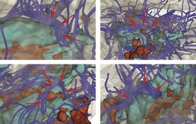
A Irimia, JD van Horn (2015)
Although over 20 anti-epileptic drugs (AED) are in common use today, approximately one-third of epilepsy patients have drug-refractory seizures and even more have AED-related adverse effects which compromise life quality. Simultaneously, there have been repeated recommendations by radiologists and neuroimaging experts to incorporate localization based on electroencephalography (EEG) into the process of clinical decision making regarding PTE patients. In this review, we discuss the epidemiology of pharmacologically resistant PTE, address the need for effective anti-epileptogenic treatments, and highlight recent progress in the development of noninvasive methods for the accurate localization of PTE foci for the purpose of neurosurgical intervention.
A Irimia, JD van Horn (2015)
Epileptogenic focus localization in treatment-resistant post-traumatic epilepsy Journal of Clinical Neuroscience volume 22, pages 627-631 [PDF]
Although over 20 anti-epileptic drugs (AED) are in common use today, approximately one-third of epilepsy patients have drug-refractory seizures and even more have AED-related adverse effects which compromise life quality. Simultaneously, there have been repeated recommendations by radiologists and neuroimaging experts to incorporate localization based on electroencephalography (EEG) into the process of clinical decision making regarding PTE patients. In this review, we discuss the epidemiology of pharmacologically resistant PTE, address the need for effective anti-epileptogenic treatments, and highlight recent progress in the development of noninvasive methods for the accurate localization of PTE foci for the purpose of neurosurgical intervention.

M Torgerson, A Irimia, SYM Goh, JD van Horn (2015)
The diffusion tensor imaging connectivity of the human claustrum Human Brain Mapping volume 36, pages 827-838 [PDF]
The origin, structure, and function of the claustrum, as well as its role in neural computation, have remained a mystery since its discovery in the 17th century. Assessing the in vivo connectivity of the claustrum may bring forth useful insights with relevance to model the overall functionality of the claustrum itself. Using structural and diffusion tensor neuroimaging in 100 healthy subjects, we found that the claustrum has the highest connectivity in the brain by regional volume. Network theoretical analyses revealed that (a) the claustrum is a primary contributor to global brain network architecture, and that (b) significant connectivity dependencies exist between the claustrum, frontal lobe, and cingulate regions. These results illustrate that the claustrum is ideally located within the human central nervous system (CNS) connectome to serve as the putative “gate keeper” of neural information for consciousness awareness. Our findings support and underscore prior theoretical contributions about the involvement of the claustrum in higher cognitive function and its relevance in devastating neurological disease.
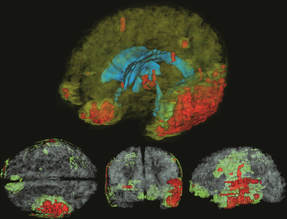
A Irimia, SYM Goh, PM Vespa and JD Van Horn (2017)
The integration of multidimensional, longitudinal data acquired using the combined use of structural neuroimaging [e.g. magnetic resonance imaging (MRI), computed tomography (CT)] and neurophysiological recordings [e.g. electroencephalography (EEG)] poses substantial challenges to neuroinformaticians and to biomedical scientists who interact frequently with such data. In traumatic brain injury (TBI) studies, this challenge is even more severe due to the substantial heterogeneity of TBIs across patients and to the variety of neurophysiological responses to injury. Here we describe our proposed solutions to the integration of structural neuroimaging with neurophysiological recordings to study epileptiform activity after TBI.
A Irimia, SYM Goh, PM Vespa and JD Van Horn (2017)
Integration of multimodal neuroimaging and electroencephalography for the study of acute epileptiform activity after traumatic brain injury Lecture Notes in Bioinformatics volume 9162, pages 165-179 [PDF]
The integration of multidimensional, longitudinal data acquired using the combined use of structural neuroimaging [e.g. magnetic resonance imaging (MRI), computed tomography (CT)] and neurophysiological recordings [e.g. electroencephalography (EEG)] poses substantial challenges to neuroinformaticians and to biomedical scientists who interact frequently with such data. In traumatic brain injury (TBI) studies, this challenge is even more severe due to the substantial heterogeneity of TBIs across patients and to the variety of neurophysiological responses to injury. Here we describe our proposed solutions to the integration of structural neuroimaging with neurophysiological recordings to study epileptiform activity after TBI.
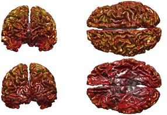
A Irimia, MJ Erhart and TT Brown (2014)
To assess the feasibility and appropriateness of magnetoencephalography (MEG) for both adult and pediatric studies, as well as for the developmental comparison of these factors across a wide range of ages, we computed the lead fields of MEG sensors using anatomically realistic boundary element models (BEMs) and individually-reconstructed cortical surfaces. This is the first study to (1) investigate the relationship between MEG cortical LFs and brain volume as well as cortical area across development, and (2) compare LFs between subjects with different head sizes using detailed cortical reconstructions.
A Irimia, MJ Erhart and TT Brown (2014)
Variability of magnetoencephalographic sensor sensitivity measures as a function of age, brain volume and cortical area Clinical Neurophysiology volume 125, pages 1973-1984 [PDF]
To assess the feasibility and appropriateness of magnetoencephalography (MEG) for both adult and pediatric studies, as well as for the developmental comparison of these factors across a wide range of ages, we computed the lead fields of MEG sensors using anatomically realistic boundary element models (BEMs) and individually-reconstructed cortical surfaces. This is the first study to (1) investigate the relationship between MEG cortical LFs and brain volume as well as cortical area across development, and (2) compare LFs between subjects with different head sizes using detailed cortical reconstructions.
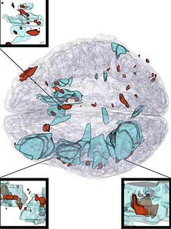
A Irimia, SYM Goh, CM Torgerson, PM Vespa, JD van Horn (2014)
The integration of longitudinal brain structure analysis with neurointensive care strategies continues to be a substantial difficulty facing the traumatic brain injury (TBI) research community. For patient-tailored case analysis, it remains challenging to establish how lesion profile modulates longitudinal changes in cortical structure and connectivity, as well as how these changes lead to behavioral, cognitive and neural dysfunction. Additionally, despite the clinical potential of morphometric and connectomic studies, few analytic tools are available for their study in TBI. Here we review the state of the art in structural and connectomic neuroimaging for the study of TBI and illustrate a set of recently-developed, patient-tailored approaches for the study of TBI-related brain atrophy and alterations in morphometry as well as inter-regional connectivity. The ability of such techniques to quantify how injury modulates longitudinal changes in cortical shape, structure and circuitry is highlighted. Quantitative approaches such as these can be used to assess and monitor the clinical condition and evolution of TBI victims, and can have substantial translational impact, especially when used in conjunction with measures of neuropsychological function.